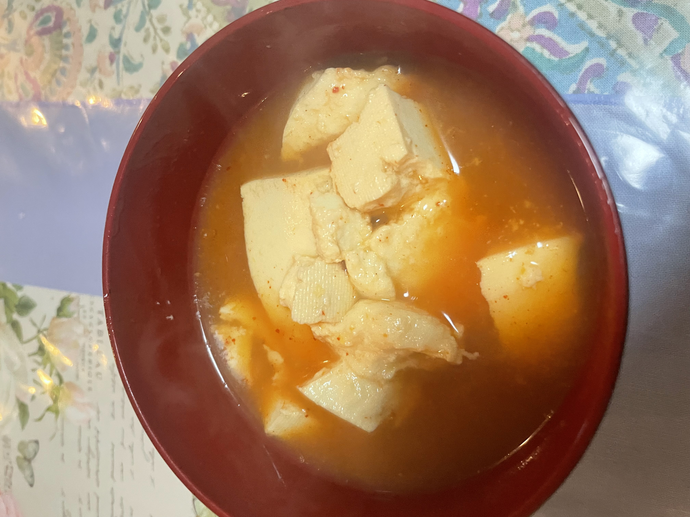
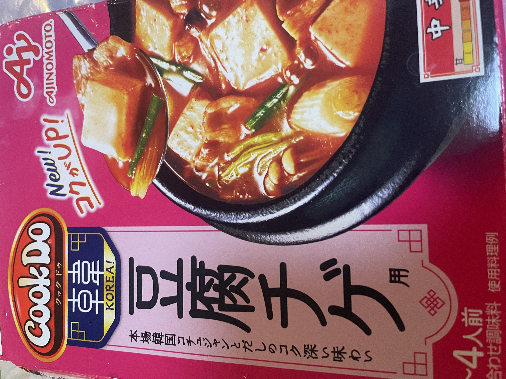

26/2/16 (Posted) TERUO＠teruo
The base itself isn’t that good. Kimchi-flavored hot pot bases are a real challenge. I think developing a good base is difficult. I’ve tried a bunch of them.
■Tofu Chige
■Tofu・Cookdo's Tofu Chige Soup
■①Put water and soup in a pot, bring to a boil, and throw in the tofu.
⇒★★★ 3.0
■Ate day：26/2/12
■Genre：Hot Pot


(Photos I took)